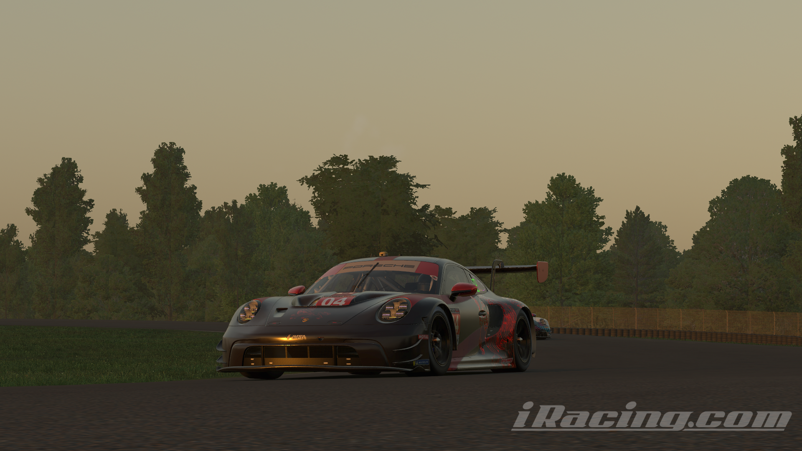

Què es Chimera Racing team?
Chimera Racing Team és un equip virtual de competició al món del simracing, es a dir, competeix a carreres virtuals organitzades a simuladors de cotxes, com Assetto Corsa Competizione o iRacing.
Perquè es va crear?
Es va crear inicialment com un equip no oficial, només per tenir una manera de competir a events fets
per
equips, concretament és va crear per competir a les 24 Hores de Nordschleife, i no estava pensat per
competir per resultats.
Ara, amb el pas del temps ha anat cresquent i ara ja es pot considerar un equip decentment seriós, amb
una
quantitat de pilots bastant més alta que al principi.
Xarxes Socials
Instagram de l'equip